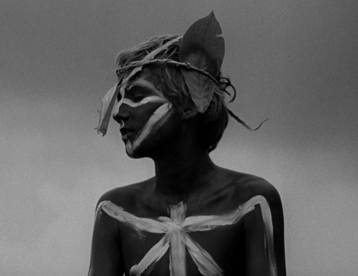

The reader first meets this character when he shows up to the meeting with a group of boys. When Ralph brings up the idea of electing a chief, he is the only one that challenges him for this position, but ends up losing to Ralph, since only the choir of boys he came with voted for him while everyone else voted for Ralph. At first, he and Ralph get along well. They explore the island together, and Ralph also lets him be in charge of a group of hunters. Even though the relationship between him and Ralph starts off okay, tensions soon build between the two. The tensions between the two boys starts when he lets the fire out to go hunt a pig. This makes Ralph angry because the fire was supposed to create a smoke signal for ships to see, and Ralph had seen a ship pass by while the fire had gone out. In contrast, he does not care about the fire as much as he cares about hunting. This shows that he prefers options that can provide the quickest feeling of success for himself rather than thinking about achieving long-term goals that would benefit the whole group. The division between him and Ralph causes him to break off from Ralph’s tribe and create his own tribe. He uses food that he hunted to successfully convince boys from Ralph’s tribe to come join him. His character is used to represent the evil and self-interest inside of the boys on the island.